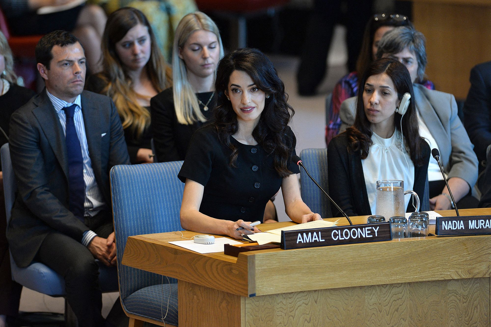
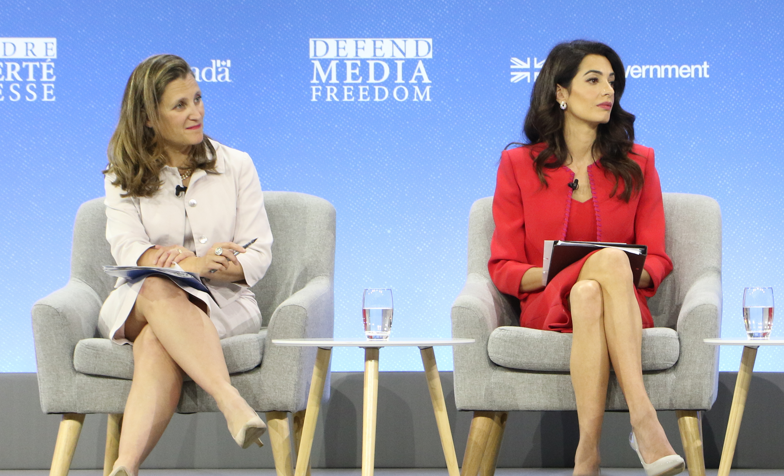

Amal Clooney en images
Deux rencontres pour découvrir les engagements d’Amal Clooney.


Amal Clooney prend la parole à l’ONU
Le 23 avril 2019, Amal Clooney intervient devant le Conseil de sécurité des Nations Unies au sujet des violences sexuelles en période de conflit.